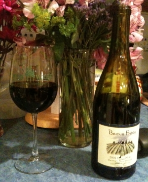

|
North America >
USA >
Oregon >
Willamette Valley >
Chehalem Mountains >
Ribbon Ridge >
Beaux Frères >
Pinot Noir The Beaux Frères Vineyard
2005 Pinot Noir The Beaux Frères Vineyard Ribbon Ridge
Beaux Frères
Newberg, OR

Unfined and unfiltered.
13.7% alcohol
750 ml

2009 tasting - This translucent, brownish red has a muted bouquet with fruit hints. The flavor is grapy, complex and slightly chewy with a tart, puckering aftertaste.
More about Pinot Noir.
|
|